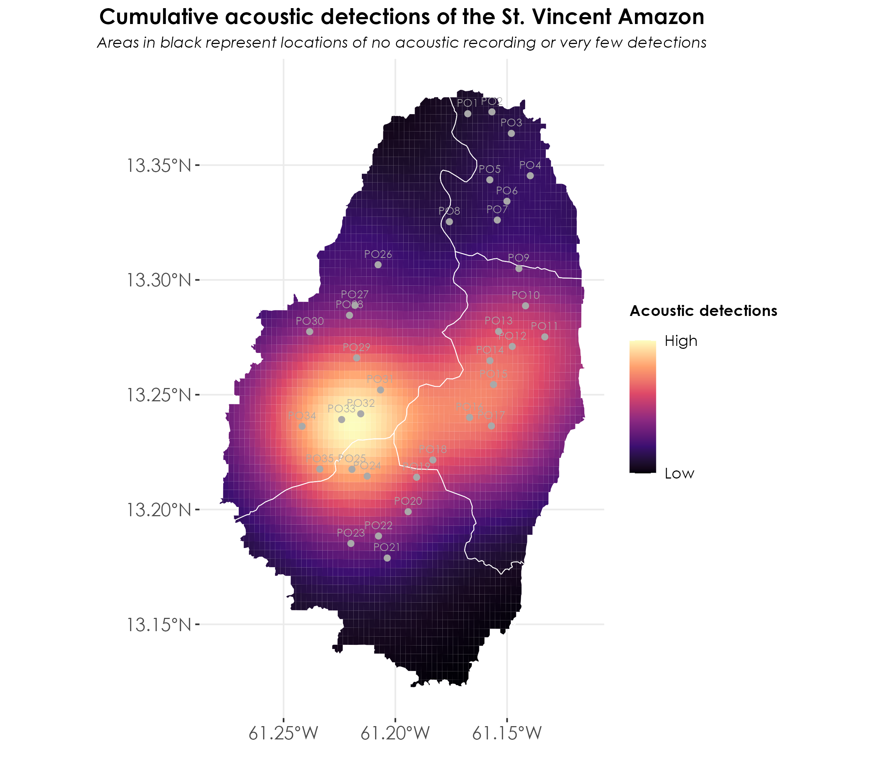
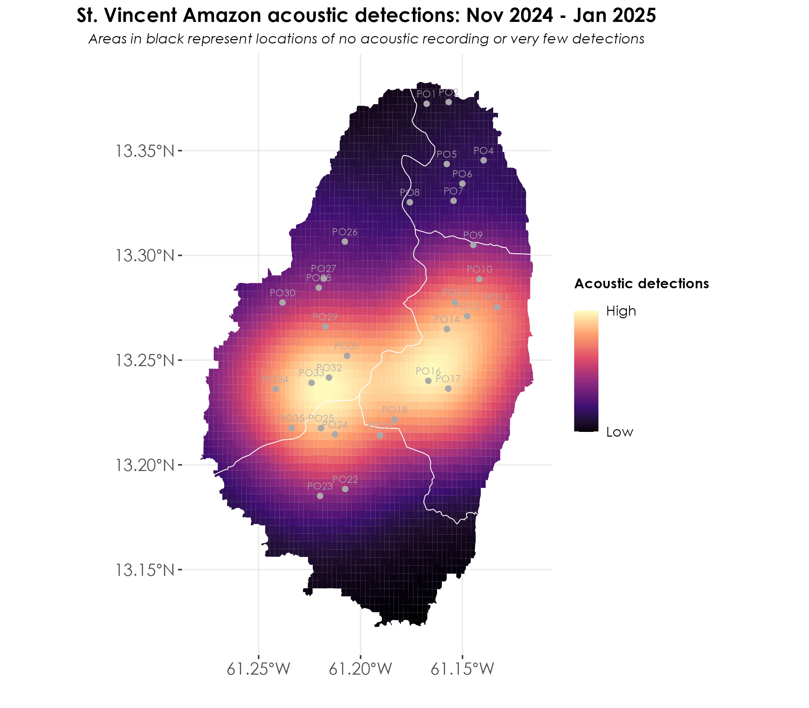
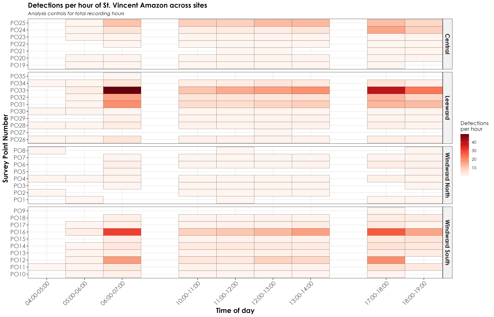
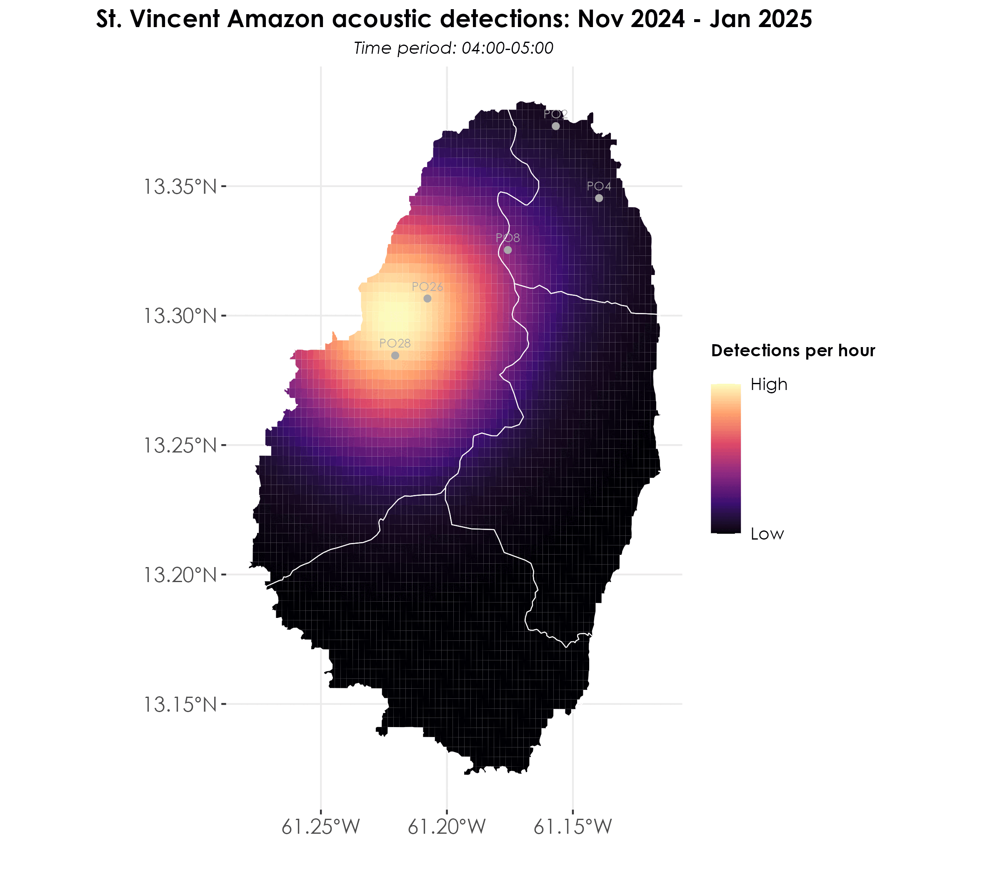
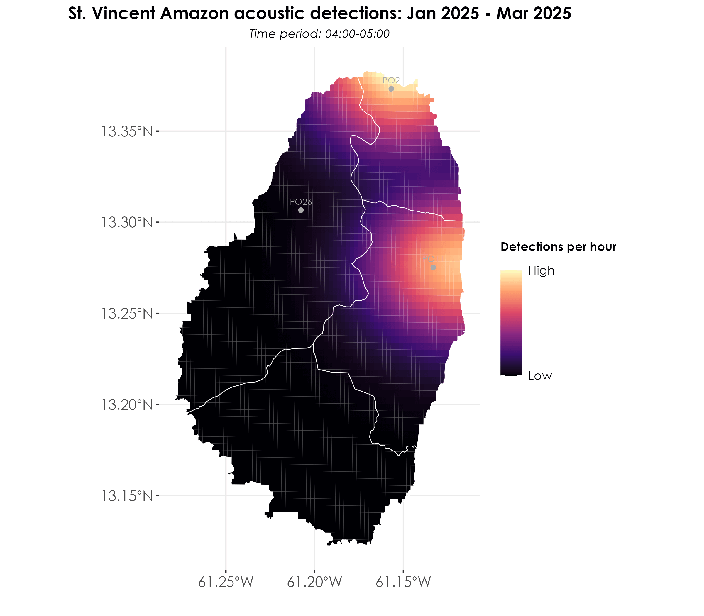
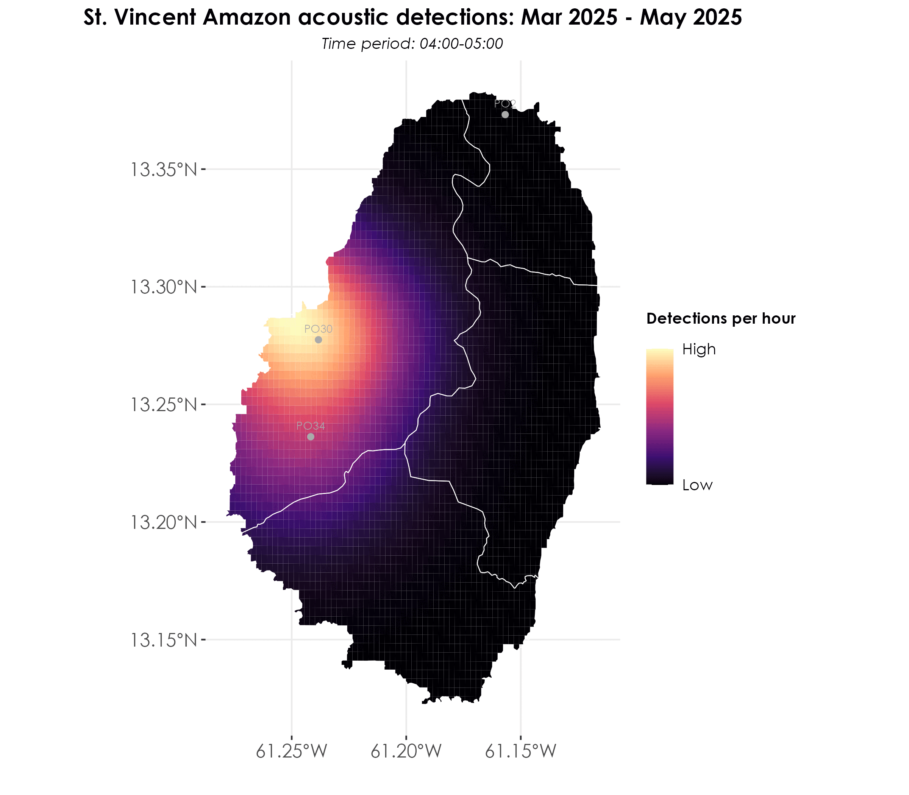
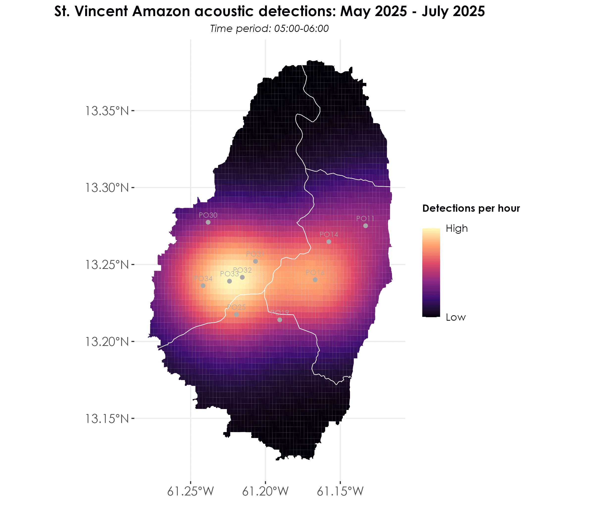

Section 5 Spatiotemporal analyses of BirdNET detections
In this script, we carry out spatiotemporal analyses of acoustic detections. Specifically, we create kernel density maps of spatiotemporal variation in acoustic detections.
5.1 Load necessary libraries
library(tidyverse)
library(dplyr)
library(stringr)
library(ggplot2)
library(data.table)
library(extrafont)
library(sf)
library(raster)
library(stars)
library(spatstat)
library(mapview)
# for plotting
library(scales)
library(ggplot2)
library(ggspatial)
library(colorspace)
library(scico)
library(RColorBrewer)
library(paletteer)5.2 Load acoustic data and metadata
metadata <- read.csv("data/acoustic-metadata.csv")
acoustic_data <- read.csv("results/datSubset.csv")
# ensure structure of dates in the metadata file is date
metadata$first_file_date <- ymd(metadata$first_file_date)
metadata$last_file_date <- ymd(metadata$last_file_date)
## create a factor of survey_point_number ordered by range_name
metadata <- metadata %>%
arrange(range_name, survey_point_number) %>%
mutate(survey_point_ordered = factor(survey_point_number,
levels = unique(survey_point_number)))
## total number of recorded days
recording_days <- metadata %>%
rowwise() %>%
mutate(
days = list(seq(first_file_date, last_file_date, by = "day"))
) %>%
unnest(days) %>%
distinct(days, survey_point_number) %>%
group_by(survey_point_number) %>%
summarise(
total_recording_days = n(),
.groups = 'drop'
) %>%
arrange(desc(total_recording_days)) %>%
left_join(metadata %>%
dplyr::select(survey_point_number, range_name) %>%
distinct(),
by = "survey_point_number")5.3 Creating a kernel density map of cumulative acoustic detections of the parrot across the island while controlling for sampling effort
## load shapefiles of ranges
st_vincent <- st_read("data/spatial/range_layer.shp")
st_vincent <- st_transform(st_vincent, 4326)
## merge lat-long from metadata with the acoustic_data file
acoustic_data <- left_join(acoustic_data, metadata[,c(1,2,15:17)])
## convert to an sf object
acoustic_data <- st_as_sf(acoustic_data, coords = c("longitude", "latitude"), crs = st_crs(st_vincent))
# get cumulative acoustic detections
cumulative_detections <- acoustic_data %>%
group_by(range_code, survey_point_number) %>%
summarise(cumulative_detections = n())
## join recording days to cumulative detections
cumulative_detections <- left_join(cumulative_detections,
recording_days) %>%
mutate(detections_by_effort = cumulative_detections/total_recording_days)
# convert geographic coordinate system to projected coordinate system
st_vincent <- st_vincent %>%
st_transform(32620)
cumulative_detections <- cumulative_detections %>%
st_transform(32620)
## create spatial points object to create KDE plot
## for information on using as.ppp, refer to spatstat.geom package
spp <- as.ppp(st_coordinates(cumulative_detections), W = as.owin(st_vincent))
marks(spp) <- round(cumulative_detections$detections_by_effort)
## create a stars object prior to plotting using sf & ggplot2
weights <- spp$marks
# scale weights from 0 to 1
# this was done to ensure that the scale of comparison is the same across months
range01 <- function(x){(x-min(x))/(max(x)-min(x))}
weights <- range01(weights)
density_obj <- stars::st_as_stars(density(spp, dimyx = 70, weights = weights,
edge = TRUE))
## convert back to sf and change the CRS
density_obj <- st_as_sf(density_obj)
st_crs(density_obj) <- 32620
density_obj <- st_intersection(density_obj, st_vincent) %>%
st_transform(4326)
st_vincent <- st_vincent %>%
st_transform(4326)
cumulative_detections <- cumulative_detections %>%
st_transform(4326)
## visualization
fig_kdePlot <- ggplot() +
geom_sf(data = density_obj, aes(fill = v), color = NA) +
geom_sf(data = st_vincent, fill = NA, color = "white", linewidth = 0.25) +
geom_sf(data = cumulative_detections, color = "darkgray",
shape = 21, fill = "darkgray") +
geom_text(data = cumulative_detections,
aes(geometry = geometry, label = survey_point_number),
stat = "sf_coordinates",
vjust = -0.9,
hjust = 0.5,
size = 2.5,
family = "Century Gothic",
color = "darkgray") +
scale_fill_viridis_c(option = "magma",
name = "Acoustic detections",
trans = "sqrt",
breaks = c(min(density_obj$v), max(density_obj$v)),
labels = c("Low", "High"))+
theme_bw() +
labs(x = '',
y = '',
size = 'Acoustic detections', color = 'Acoustic detections',
title = "Cumulative acoustic detections of the St. Vincent Amazon",
subtitle = "Areas in black represent locations of no acoustic recording or very few detections") +
theme(
plot.title = element_text(
family = "Century Gothic",
size = 14, face = "bold", hjust = 0.5
),
plot.subtitle = element_text(
family = "Century Gothic",
size = 10, face = "italic", hjust = 0.5
),
axis.title = element_text(
family = "Century Gothic",
size = 14, face = "bold"
),
axis.text = element_text(family = "Century Gothic", size = 12),
legend.position = "right",
legend.title = element_text(family = "Century Gothic", size = 10, face = "bold", margin = margin(b = 15)),
legend.text = element_text(family = "Century Gothic", size = 10),
panel.border = element_blank()
)
ggsave(fig_kdePlot, filename = "figs/fig_kernelDensityMap_cumulativeDetections.png", width = 8, height = 7, device = png(), units = "in", dpi = 300)
dev.off() ## Kernel density maps for different months of data
Here, we replicate the above plot, but by creating a spatiotemporal series of plots for different months of sampling across the island.
## bin total recording days for each survey_point_number by different months
recording_days <- metadata %>%
rowwise() %>%
mutate(
days = list(seq(first_file_date, last_file_date, by = "day"))
) %>%
unnest(days) %>%
mutate(
month = case_when(
days >= as.Date("2024-11-01") & days <= as.Date("2024-12-31") ~ "Nov 2024 - Jan 2025",
days >= as.Date("2025-01-01") & days <= as.Date("2025-02-28") ~ "Jan 2025 - Mar 2025",
days >= as.Date("2025-03-01") & days <= as.Date("2025-04-30") ~ "Mar 2025 - May 2025",
days >= as.Date("2025-05-01") & days <= as.Date("2025-07-31") ~ "May 2025 - July 2025"
)
) %>%
distinct(days, survey_point_number, month) %>%
group_by(month, survey_point_number) %>%
summarise(
recording_days = n(),
.groups = 'drop'
) %>%
mutate(month = factor(month,
levels = c("Nov 2024 - Jan 2025",
"Jan 2025 - Mar 2025",
"Mar 2025 - May 2025",
"May 2025 - July 2025"))) %>%
arrange(month, survey_point_number)
# generate detections by month
detections_by_month <- acoustic_data %>%
mutate(
date = as.Date(as.character(date), format = "%Y%m%d"),
month = case_when(
date >= as.Date("2024-11-01") & date <= as.Date("2024-12-31") ~ "Nov 2024 - Jan 2025",
date >= as.Date("2025-01-01") & date <= as.Date("2025-02-28") ~ "Jan 2025 - Mar 2025",
date >= as.Date("2025-03-01") & date <= as.Date("2025-04-30") ~ "Mar 2025 - May 2025",
date >= as.Date("2025-05-01") & date <= as.Date("2025-07-31") ~ "May 2025 - July 2025"
)
) %>%
group_by(month, survey_point_number) %>%
summarise(
total_detections = n(),
.groups = 'drop'
) %>%
mutate(month = factor(month,
levels = c("Nov 2024 - Jan 2025",
"Jan 2025 - Mar 2025",
"Mar 2025 - May 2025",
"May 2025 - July 2025"))) %>%
arrange(month, survey_point_number)
# merge dataframes
monthly_detections <- left_join(detections_by_month, recording_days,
by = c("month", "survey_point_number"))
## replicate the KDE plots so that we can generate them by the monthly time periods
# create a list to store individual plots
monthly_kde_plots <- list()
# define months in chronological order
months <- c("Nov 2024 - Jan 2025",
"Jan 2025 - Mar 2025",
"Mar 2025 - May 2025",
"May 2025 - July 2025")
# creating a kde plot for each month
for(current_month in months) {
# subset data for current month
month_data <- monthly_detections %>%
filter(month == current_month) %>%
mutate(detections_by_effort = total_detections/recording_days)
# transform coordinate systems
st_vincent_proj <- st_vincent %>% st_transform(32620)
month_data_proj <- month_data %>% st_transform(32620)
# create spatial points object
spp <- as.ppp(st_coordinates(month_data_proj),
W = as.owin(st_vincent_proj))
marks(spp) <- round(month_data_proj$detections_by_effort)
# create density object
weights <- spp$marks
range01 <- function(x){(x-min(x))/(max(x)-min(x))}
weights <- range01(weights)
density_obj <- stars::st_as_stars(density(spp, dimyx = 70, weights = weights, edge = TRUE))
# Convert back to sf and transform CRS
density_obj <- st_as_sf(density_obj)
st_crs(density_obj) <- 32620
density_obj <- st_intersection(density_obj,
st_vincent_proj) %>%
st_transform(4326)
# create plot
p <- ggplot() +
geom_sf(data = density_obj, aes(fill = v), color = NA) +
geom_sf(data = st_vincent, fill = NA, color = "white",
linewidth = 0.25) +
geom_sf(data = month_data, color = "darkgray",
shape = 21, fill = "darkgray") +
geom_text(data = month_data,
aes(geometry = geometry, label = survey_point_number),
stat = "sf_coordinates",
vjust = -0.9,
hjust = 0.5,
size = 2.5,
family = "Century Gothic",
color = "darkgray") +
scale_fill_viridis_c(option = "magma",
name = "Acoustic detections",
trans = "sqrt",
breaks = c(min(density_obj$v), max(density_obj$v)),
labels = c("Low", "High")) +
theme_bw() +
labs(x = '',
y = '',
size = 'Acoustic detections',
color = 'Acoustic detections',
title = paste("St. Vincent Amazon acoustic detections:", current_month),
subtitle ="Areas in black represent locations of no acoustic recording or very few detections") +
theme(
plot.title = element_text(
family = "Century Gothic",
size = 14, face = "bold", hjust = 0.5
),
plot.subtitle = element_text(
family = "Century Gothic",
size = 10, face = "italic", hjust = 0.5
),
axis.title = element_text(
family = "Century Gothic",
size = 14, face = "bold"
),
axis.text = element_text(family = "Century Gothic", size = 12),
legend.position = "right",
legend.title = element_text(family = "Century Gothic", size = 10, face = "bold", margin = margin(b = 15)),
legend.text = element_text(family = "Century Gothic", size = 10),
panel.border = element_blank()
)
# save individual plot with numbered prefix for correct ordering
month_number <- which(months == current_month)
filename <- sprintf("figs/kde_%02d_%s.png", month_number, gsub(" ", "_", current_month))
ggsave(filename = filename, plot = p, width = 8, height = 7, dpi = 300)
# store plot in list
monthly_kde_plots[[current_month]] <- p
}
# create GIF using magick package
library(magick)
# list all the PNG files in correct order
img_files <- list.files("figs", pattern = "kde_.*\\.png", full.names = TRUE)
img_files <- sort(img_files)
# read images
imgs <- image_read(img_files)
# create GIF
gif <- image_animate(imgs, fps = 0.5)
# save GIF
image_write(gif, "figs/monthly_kde_animation.gif")

Kernel density maps of species acoustic detections across different months for the entire time period
5.4 Visualizing detections by time of day
Here, we visualize by time of day while weighting for the total recording hours for that time period.
recording_hours_by_timeframe <- metadata %>%
# first handle the dates and times
mutate(
# convert HHMMSS to decimal hours
first_hour = as.numeric(substr(sprintf("%06d", first_file_time), 1, 2)),
first_minute = as.numeric(substr(sprintf("%06d", first_file_time),
3, 4)) / 60,
last_hour = as.numeric(substr(sprintf("%06d", last_file_time), 1, 2)),
last_minute = as.numeric(substr(sprintf("%06d", last_file_time),
3, 4)) / 60,
first_decimal_time = first_hour + first_minute,
last_decimal_time = last_hour + last_minute,
days = as.numeric(last_file_date - first_file_date),
sampling_periods = str_split(aru_sampling_times, "; ")
) %>%
unnest(sampling_periods) %>%
separate(sampling_periods, into = c("start_time", "end_time"),
sep = "-") %>%
# convert scheduled periods to decimal hours
mutate(
period_start_hour = as.numeric(substr(start_time, 1, 2)),
period_end_hour = as.numeric(substr(end_time, 1, 2))
) %>%
# generate hourly time frames
rowwise() %>%
mutate(
hours = list(seq(period_start_hour, period_end_hour - 1))
) %>%
unnest(hours) %>%
# create time frame labels and calculate hours for each frame
mutate(
time_frame = sprintf("%02d:00-%02d:00", hours, hours + 1),
# calculate hours for first day
first_day_hours = case_when(
hours >= first_hour ~ 1, # full hour if after start
hours + 1 > first_decimal_time ~ (hours + 1) - first_decimal_time,
# partial hour at start
TRUE ~ 0
),
# calculate hours for last day
last_day_hours = case_when(
hours + 1 <= last_hour ~ 1, # full hour if before end
hours < last_decimal_time ~ last_decimal_time - hours,
# partial hour at end
TRUE ~ 0
),
# calculate hours for middle days using case_when
middle_days_hours = case_when(
days > 0 ~ 1,
TRUE ~ 0
)
) %>%
group_by(survey_point_number, time_frame) %>%
summarise(
total_hours = sum(first_day_hours +
(middle_days_hours * (days - 1)) +
# subtract 1 to not double count first/last days
last_day_hours),
.groups = 'drop'
) %>%
# add range information
left_join(metadata %>%
dplyr::select(survey_point_number, range_name) %>%
distinct(),
by = "survey_point_number") %>%
# order time frames chronologically
mutate(
time_frame = factor(time_frame,
levels = sort(unique(time_frame)))
) %>%
arrange(survey_point_number, time_frame)
# get detections by timeframe
detections_by_timeframe <- acoustic_data %>%
mutate(
hour = as.numeric(substr(sprintf("%06d", time), 1, 2)),
time_frame = sprintf("%02d:00-%02d:00", hour, hour + 1)
) %>%
group_by(range_code, survey_point_number, time_frame) %>%
summarise(total_detections = n(), .groups = 'drop') %>%
mutate(
time_frame = factor(time_frame,
levels = sort(unique(time_frame)))
)
# join with recording hours and calculate detections per hour
detections_per_hour <- detections_by_timeframe %>%
left_join(recording_hours_by_timeframe,
by = c("survey_point_number",
"time_frame")) %>%
mutate(
detections_per_hour = total_detections / total_hours
)
# create the sequence of time frames in groups
morning_times <- c("04:00-05:00", "05:00-06:00", "06:00-07:00")
midday_times <- c("10:00-11:00", "11:00-12:00", "12:00-13:00", "13:00-14:00")
evening_times <- c("17:00-18:00", "18:00-19:00")
# combine all times but keep track of groups
time_sequence <- c(morning_times, midday_times, evening_times)
# recordering detections_per_hour dataframe
detections_per_hour_ordered <- detections_per_hour %>%
# reorder time_frame factor levels
mutate(
time_frame = factor(time_frame, levels = time_sequence),
# create a grouping variable
time_group = case_when(
time_frame %in% morning_times ~ 1,
time_frame %in% midday_times ~ 2,
time_frame %in% evening_times ~ 3
)
)
## visualization
fig_detections_per_hour <- detections_per_hour_ordered %>%
ggplot(aes(x = time_frame, y = survey_point_number, fill = detections_per_hour)) +
geom_tile(color = "black") +
scale_fill_gradientn(colours = c(brewer.pal(9, "Reds"))) +
facet_grid(range_name ~ ., scales = "free_y", space = "free_y") +
labs(title = "Detections per hour of St. Vincent Amazon across sites",
x = "Time of day",
y = "Survey Point Number",
fill = "Detections\nper hour",
subtitle = "Analysis controls for total recording hours") +
theme_bw() +
theme(
axis.title = element_text(
family = "Century Gothic",
size = 14, face = "bold"
),
plot.title = element_text(family = "Century Gothic",
size = 14, face = "bold"),
plot.subtitle = element_text(family = "Century Gothic",
face = "italic", size = 10),
axis.text = element_text(family = "Century Gothic", size = 12),
axis.text.x = element_text(angle = 45, hjust = 1),
legend.title = element_text(family = "Century Gothic"),
legend.text = element_text(family = "Century Gothic"),
strip.text = element_text(
family = "Century Gothic",
size = 12, face = "bold"
),
strip.background = element_rect(fill = "grey95"),
panel.spacing.x = unit(1, "lines")
) +
scale_x_discrete(
breaks = time_sequence,
expand = expansion(mult = 0.05),
position = "bottom",
drop = FALSE,
limits = c(morning_times, "", midday_times, "", evening_times)
)
ggsave(fig_detections_per_hour,
filename = "figs/fig_detections_per_hour.png",
width = 14, height = 9,
device = png(), units = "in", dpi = 300)
dev.off()

Detections by hour across sites for the entire sampling period, while controlling for total recording hours
5.5 Detections by time of day and month
# calculate recording hours by month and timeframe
recording_hours_by_month_timeframe <- metadata %>%
# create date sequence for each point
rowwise() %>%
mutate(
dates = list(seq(first_file_date, last_file_date, by = "day"))
) %>%
unnest(dates) %>%
# assign monthly periods
mutate(
month = case_when(
dates >= as.Date("2024-11-01") & dates <= as.Date("2024-12-31") ~ "Nov 2024 - Jan 2025",
dates >= as.Date("2025-01-01") & dates <= as.Date("2025-02-28") ~ "Jan 2025 - Mar 2025",
dates >= as.Date("2025-03-01") & dates <= as.Date("2025-04-30") ~ "Mar 2025 - May 2025",
dates >= as.Date("2025-05-01") & dates <= as.Date("2025-07-31") ~ "May 2025 - July 2025"
),
# convert first and last file times to decimal hours
first_hour = as.numeric(substr(sprintf("%06d", first_file_time), 1, 2)),
first_minute = as.numeric(substr(sprintf("%06d", first_file_time), 3, 4)) / 60,
last_hour = as.numeric(substr(sprintf("%06d", last_file_time), 1, 2)),
last_minute = as.numeric(substr(sprintf("%06d", last_file_time), 3, 4)) / 60,
first_decimal_time = first_hour + first_minute,
last_decimal_time = last_hour + last_minute
) %>%
# split sampling periods
separate_rows(aru_sampling_times, sep = "; ") %>%
separate(aru_sampling_times, into = c("start_time", "end_time"), sep = "-") %>%
mutate(
start_hour = as.numeric(substr(start_time, 1, 2)),
end_hour = as.numeric(substr(end_time, 1, 2))
) %>%
rowwise() %>%
mutate(
hours = list(seq(start_hour, end_hour - 1))
) %>%
unnest(hours) %>%
mutate(
time_frame = sprintf("%02d:00-%02d:00", hours, hours + 1),
# calculate daily hours
daily_hours = case_when(
# first day
dates == first_file_date & hours < first_decimal_time ~ 0,
dates == first_file_date & hours >= first_decimal_time ~ 1,
# last day
dates == last_file_date & hours >= last_decimal_time ~ 0,
dates == last_file_date & hours < last_decimal_time ~ 1,
# middle days - full hours within sampling period
TRUE ~ 1
)
) %>%
# sum up actual hours
group_by(survey_point_number, month, time_frame) %>%
summarise(
total_hours = sum(daily_hours),
.groups = 'drop'
)
# calculate detections by month and timeframe
detections_by_month_timeframe <- acoustic_data %>%
mutate(
date = as.Date(as.character(date), format = "%Y%m%d"),
hour = as.numeric(substr(sprintf("%06d", time), 1, 2)),
time_frame = sprintf("%02d:00-%02d:00", hour, hour + 1),
month = case_when(
date >= as.Date("2024-11-01") & date <= as.Date("2024-12-31") ~ "Nov 2024 - Jan 2025",
date >= as.Date("2025-01-01") & date <= as.Date("2025-02-28") ~ "Jan 2025 - Mar 2025",
date >= as.Date("2025-03-01") & date <= as.Date("2025-04-30") ~ "Mar 2025 - May 2025",
date >= as.Date("2025-05-01") & date <= as.Date("2025-07-31") ~ "May 2025 - July 2025"
)
) %>%
group_by(survey_point_number, month, time_frame) %>%
summarise(
total_detections = n(),
.groups = 'drop'
)
# create final dataset
detections_per_hour_by_month <- detections_by_month_timeframe %>%
# join with recording hours
inner_join(recording_hours_by_month_timeframe,
by = c("survey_point_number", "month", "time_frame")) %>%
# add coordinates
left_join(metadata %>%
dplyr::select(survey_point_number, longitude, latitude) %>%
distinct(),
by = "survey_point_number") %>%
# calculate detections per hour
mutate(
detections_per_hour = total_detections / total_hours
) %>%
# convert to sf object
st_as_sf(coords = c("longitude", "latitude"), crs = 4326) %>%
# factor the month variable for proper ordering
mutate(month = factor(month,
levels = c("Nov 2024 - Jan 2025",
"Jan 2025 - Mar 2025",
"Mar 2025 - May 2025",
"May 2025 - July 2025")))
# create a list to store individual plots
monthly_hourly_kde_plots <- list()
# define months and time periods
months <- c("Nov 2024 - Jan 2025",
"Jan 2025 - Mar 2025",
"Mar 2025 - May 2025",
"May 2025 - July 2025")
# get unique time frames from your data
time_frames <- sort(unique(detections_per_hour_by_month$time_frame))
# creating a kde plot for each month and time frame combination
for(current_month in months) {
for(current_time in time_frames) {
# subset data for current month and time frame
period_data <- detections_per_hour_by_month %>%
filter(month == current_month,
time_frame == current_time,
!is.na(detections_per_hour)) # Remove NA values
# only proceed if we have enough data
if(nrow(period_data) >= 3) { # KDE needs at least 3 points
# transform coordinate systems
st_vincent_proj <- st_vincent %>% st_transform(32620)
period_data_proj <- period_data %>% st_transform(32620)
# create spatial points object
spp <- as.ppp(st_coordinates(period_data_proj),
W = as.owin(st_vincent_proj))
# handle weights
weights <- period_data_proj$detections_per_hour
if(all(weights == 0)) {
# skip this period if all weights are zero
next
}
# normalize weights to avoid extremely small values
range01 <- function(x){(x-min(x))/(max(x)-min(x))}
weights <- range01(weights)
# check for NA/NaN in weights
if(any(is.na(weights))) {
print(paste("NA weights found in", current_month, current_time))
next
}
# create density object
density_obj <- stars::st_as_stars(density(spp, dimyx = 70,
weights = weights,
edge = TRUE))
# Convert back to sf and transform CRS
density_obj <- st_as_sf(density_obj)
st_crs(density_obj) <- 32620
density_obj <- st_intersection(density_obj, st_vincent_proj) %>%
st_transform(4326)
# create plot
p <- ggplot() +
geom_sf(data = density_obj, aes(fill = v), color = NA) +
geom_sf(data = st_vincent, fill = NA, color = "white",
linewidth = 0.25) +
geom_sf(data = period_data, color = "darkgray",
shape = 21, fill = "darkgray") +
geom_text(data = period_data,
aes(geometry = geometry, label = survey_point_number),
stat = "sf_coordinates",
vjust = -0.9,
hjust = 0.5,
size = 2.5,
family = "Century Gothic",
color = "darkgray") +
scale_fill_viridis_c(option = "magma",
name = "Detections per hour",
trans = "sqrt",
breaks = c(min(density_obj$v), max(density_obj$v)),
labels = c("Low", "High")) +
theme_bw() +
labs(x = '',
y = '',
size = 'Detections per hour',
color = 'Detections per hour',
title = paste("St. Vincent Amazon acoustic detections:",
current_month),
subtitle = paste("Time period:", current_time)) +
theme(
plot.title = element_text(
family = "Century Gothic",
size = 14, face = "bold", hjust = 0.5
),
plot.subtitle = element_text(
family = "Century Gothic",
size = 10, face = "italic", hjust = 0.5
),
axis.title = element_text(
family = "Century Gothic",
size = 14, face = "bold"
),
axis.text = element_text(family = "Century Gothic", size = 12),
legend.position = "right",
legend.title = element_text(
family = "Century Gothic",
size = 10, face = "bold",
margin = margin(b = 15)
),
legend.text = element_text(family = "Century Gothic", size = 10),
panel.border = element_blank()
)
# save individual plot
time_number <- which(time_frames == current_time)
month_number <- which(months == current_month)
filename <- sprintf("figs/kde_%02d_%02d_%s_%s.png",
month_number, time_number,
gsub(" ", "_", current_month),
gsub(":", "", current_time))
ggsave(filename = filename, plot = p, width = 8, height = 7, dpi = 300)
# store plot in list
monthly_hourly_kde_plots[[paste(current_month, current_time)]] <- p
}
}
}
# create separate GIFs for each month
library(magick)
for(current_month in months) {
# list all the PNG files for current month in correct order
month_pattern <- paste0("kde_.*", gsub(" ", "_", current_month))
img_files <- list.files("figs", pattern = month_pattern, full.names = TRUE)
img_files <- sort(img_files)
# Only proceed if we have files
if(length(img_files) > 0) {
# read images
imgs <- image_read(img_files)
# create GIF
gif <- image_animate(imgs, fps = 0.5)
# save GIF
gif_filename <- paste0("figs/monthly_kde_animation_by_time_of_day",
gsub(" ", "_", current_month), ".gif")
image_write(gif, gif_filename)
}
}

Spatiotemporal clustering of acoustic detections between Nov 2024 and Jan 2025

Spatiotemporal clustering of acoustic detections between Jan 2025 and Mar 2025

Spatiotemporal clustering of acoustic detections between Mar 2025 and May 2025

Spatiotemporal clustering of acoustic detections between May 2025 and July 2025